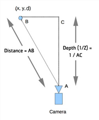

要选择输出内容:
| 1。 | 在 DepthGenerator 属性中，使用 深度输出 要选择要生成的深度贴图类型，请执行以下操作: |
• 深度 (1/Z) -输出 1/Z，其中 Z 是相机沿 Z 轴的距离。这与 ScanlineRender 节点的深度输出相匹配。
此模式还允许您稍后创建一个组节点，其中一张卡位于 3D 空间中，并根据深度通道置换。
• 距离 -输出沿光线从相机中心到 3D 曲面点的距离。
在下图中，每个像素形成一条射线，AB 测量从相机到 3D 点的物理距离，而 AC 测量相机沿 Z 轴的距离。
|
 |
| 计算深度。 |
| 2. | 如果还希望将深度输出为位置通道，请设置 表面点 到要存储此信息的通道 (例如，您可以创建一个名为 Ppass ,其中包含通道 X , Y ,和 Z )。 |
位置过程包括图像中每个像素的 X 、 Y 和 Z 坐标。您可以将其与重点亮节点一起使用，也可以与 PositionToPoints 节点一起使用，以将深度可视化为点云。
|
|
| 一个位置通行证。 |
| 3. | 同样，要将深度输出为法线通道，请设置 表面正常 到要存储法线通道的通道 (例如，创建一个名为 Npass ,其中包含通道 X , Y ,和 Z )。 |
法线传递包含图像中每个像素的三个信息向量: X 方向、 Y 方向和 Z 方向。换句话说，它存储图像中每个点面对的方向。可以将法线传递与重点亮节点一起使用。
|
|
| 一个法线通过。 |
| 4. | 继续到 分析深度 下面。 |
|
|